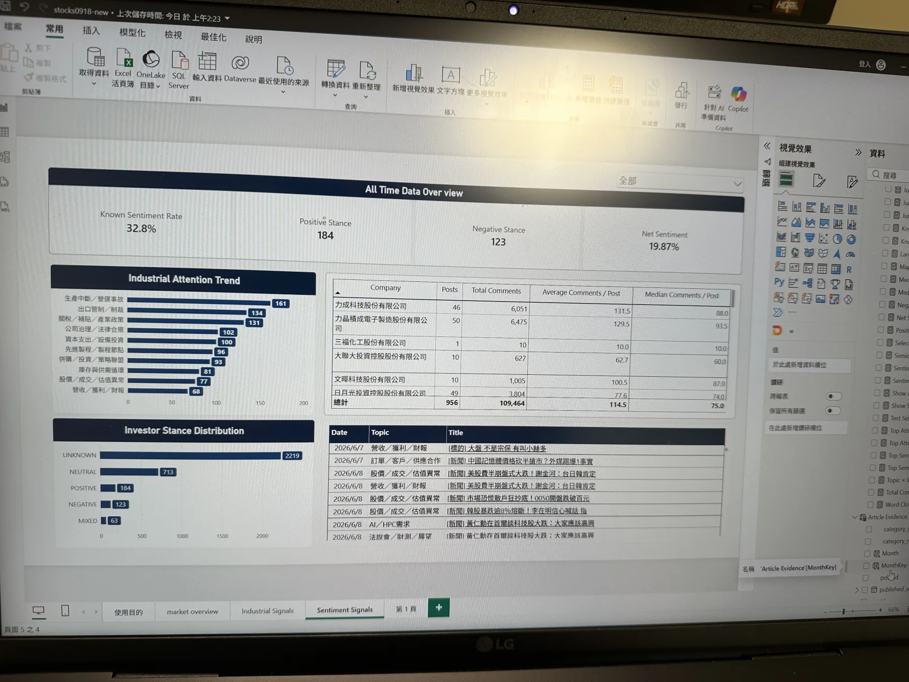

AI / HPC attention 上升，立場未同步改善
2026-06 → 2026-07，attention 223 → 316；Positive 10 → 15、Negative 4 → 15，net stance 0.429 → 0.000。Evidence extraction 評為 A，解讀為 attention–stance divergence，不解讀成股價預測。
Featured project · BI × Data Analytics
把 PTT Stock 的非結構化討論轉換為可追溯的 Post、Comment、Topic、Company、Supply Chain 與 Investor Stance 分析層。

Problem
討論量不是單一指標。高 attention 可能只是事件集中；高 comments 代表討論強度，不等於正向立場；UNKNOWN 也不能被併入 NEUTRAL。
正式分析完全排除 60 筆 Final Holdout，並將文章與留言分開處理。Post 使用正式月份；Comment 缺乏可靠年份，因此只透過 parent post 的月份提供討論脈絡，不把它偽裝成留言自身的時間序列。
Attention 以 distinct post_id 計算；Sentiment 維持 target-level；多標籤 bridge 保留 many-to-many 結構；UNKNOWN 與 NEUTRAL 全程分開。
Workflow
Selected findings
2026-06 → 2026-07，attention 223 → 316；Positive 10 → 15、Negative 4 → 15，net stance 0.429 → 0.000。Evidence extraction 評為 A，解讀為 attention–stance divergence，不解讀成股價預測。
2026-06 → 07 → 08，attention 114 → 246 → 183；attention share 6.16% → 11.01% → 11.46%。此訊號只做 attention 解讀，不強行加入低樣本 stance 結論。
2026-06 → 07，attention 150 → 217；Positive 7 → 17、Negative 14 → 7，net stance -0.333 → 0.417。Evidence extraction 評為 B，需保留 company mapping 與 stance coverage caveat。
Power BI delivery
頁面以決策問題分層。Market overview、Industrial Signals、Investor Stance & Evidence，以及 Company drill-through。
模型讓使用者先看月份、議題、供應鏈與公司 attention，再進入 engagement、observable stance 與代表文章。Drill-through 保留 post_id、標題、日期、Evidence 與來源 URL，讓分析可以回查。
Comment analytical layer 只作 engagement 與 reaction context；778,853 則留言原文不強制載入主要報表，避免犧牲效能。
Limitations